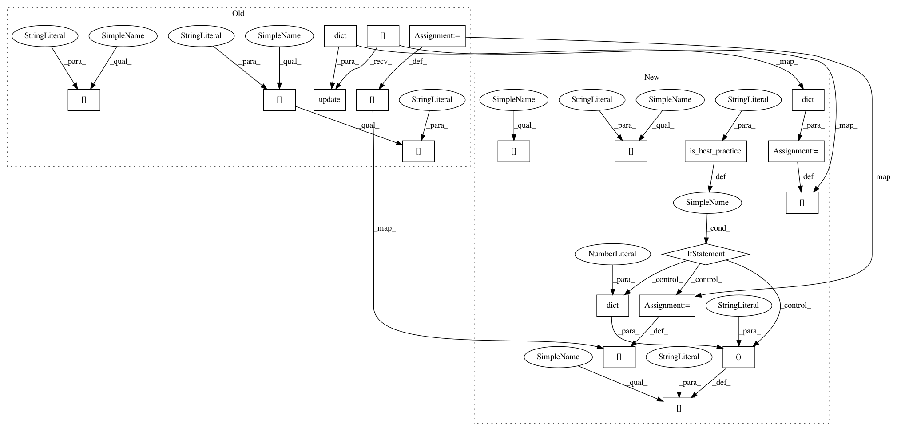

1bfa3137cce6f41d160ceed23d098c26f26951ea,dataset/models/tf/vnet.py,VNet,default_config,#Any#,32
Before Change
config = TFModel.default_config()
filters = 16 // number of filters in the first block
config["body"]["layout"] = ["cna", "cna"*2] + ["cna"*3] * 3
num_blocks = len(config["body"]["layout"])
config["body"]["filters"] = 2 ** np.arange(num_blocks) * filters
config["body"]["kernel_size"] = 5
config["body"]["upsample"] = dict(layout="tna", factor=2)
config["head"].update(dict(layout="c", kernel_size=1))
config["loss"] = "ce"
config["decay"] = ("invtime", dict(learning_rate=1e-4, decay_steps=25000, decay_rate=10))
config["optimizer"] = dict(name="Momentum", momentum=.99)
return config
def build_config(self, names=None):
config = super().build_config(names)
After Change
config = TFModel.default_config()
filters = 16 // number of filters in the first block
config["body/layout"] = ["cna", "cna"*2] + ["cna"*3] * 3
num_blocks = len(config["body"]["layout"])
config["body/filters"] = 2 ** np.arange(num_blocks) * filters
config["body/kernel_size"] = 5
config["body/upsample"] = dict(layout="tna", factor=2)
config["head"] = dict(layout="c", kernel_size=1)
config["loss"] = "ce"
if is_best_practice("optimizer"):
config["optimizer"] = "Adam"
else:
config["decay"] = ("invtime", dict(learning_rate=1e-4, decay_steps=25000, decay_rate=10))
config["optimizer"] = ("Momentum", dict(momentum=.99))
return config
def build_config(self, names=None):
config = super().build_config(names)
In pattern: SUPERPATTERN
Frequency: 3
Non-data size: 20
Instances
Project Name: analysiscenter/batchflow
Commit Name: 1bfa3137cce6f41d160ceed23d098c26f26951ea
Time: 2018-05-07
Author: rhudor@gmail.com
File Name: dataset/models/tf/vnet.py
Class Name: VNet
Method Name: default_config
Project Name: analysiscenter/batchflow
Commit Name: 1bfa3137cce6f41d160ceed23d098c26f26951ea
Time: 2018-05-07
Author: rhudor@gmail.com
File Name: dataset/models/tf/densenet.py
Class Name: DenseNet
Method Name: default_config
Project Name: analysiscenter/batchflow
Commit Name: 1bfa3137cce6f41d160ceed23d098c26f26951ea
Time: 2018-05-07
Author: rhudor@gmail.com
File Name: dataset/models/tf/vnet.py
Class Name: VNet
Method Name: default_config
Project Name: analysiscenter/batchflow
Commit Name: 1bfa3137cce6f41d160ceed23d098c26f26951ea
Time: 2018-05-07
Author: rhudor@gmail.com
File Name: dataset/models/tf/resnet.py
Class Name: ResNet
Method Name: default_config